CF—DR—001 / 2024
Drawn Fields
Lines accumulate. Shapes drift out of alignment.
Drawings made on an iPad, moving between tangled lines, bright shapes, and quieter washes of color. Captions describe the images rather than give them formal titles.


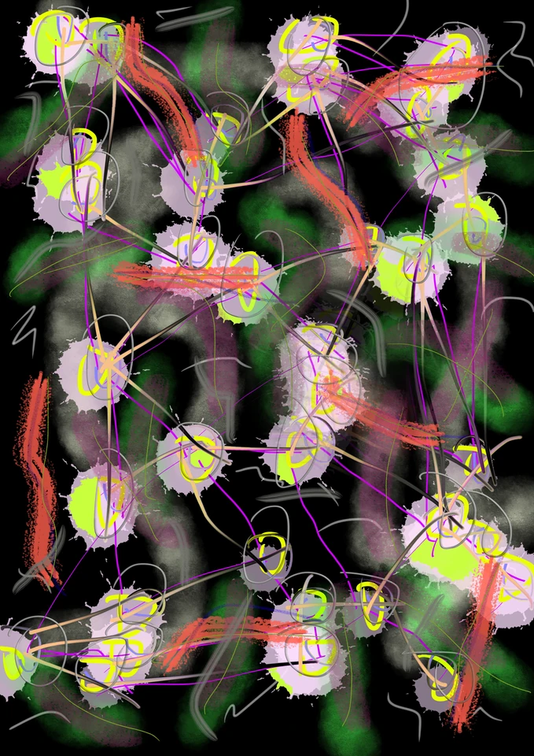

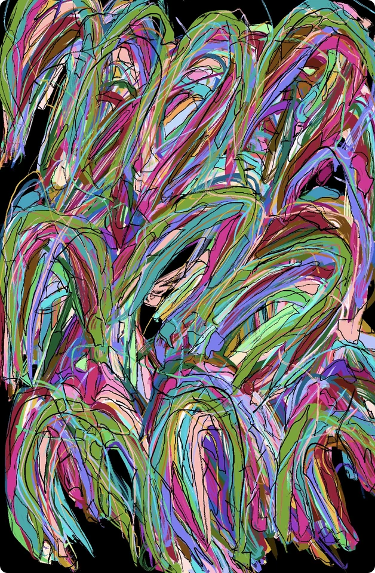

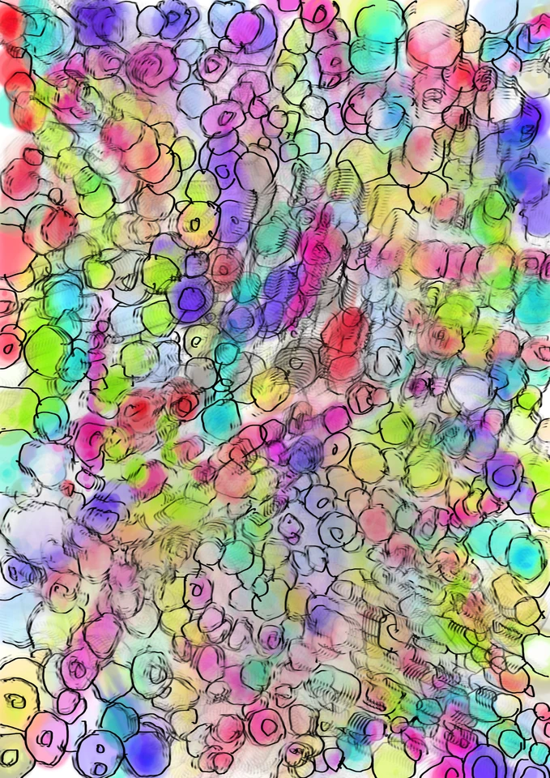


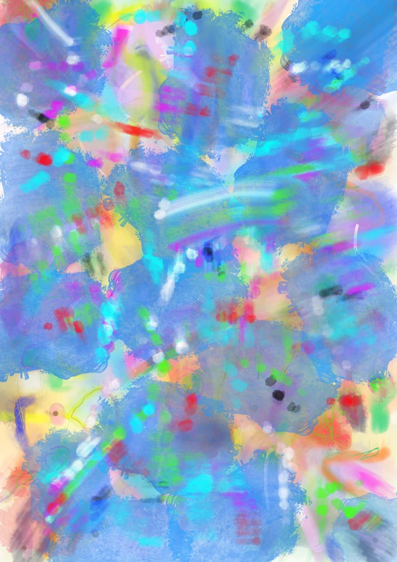

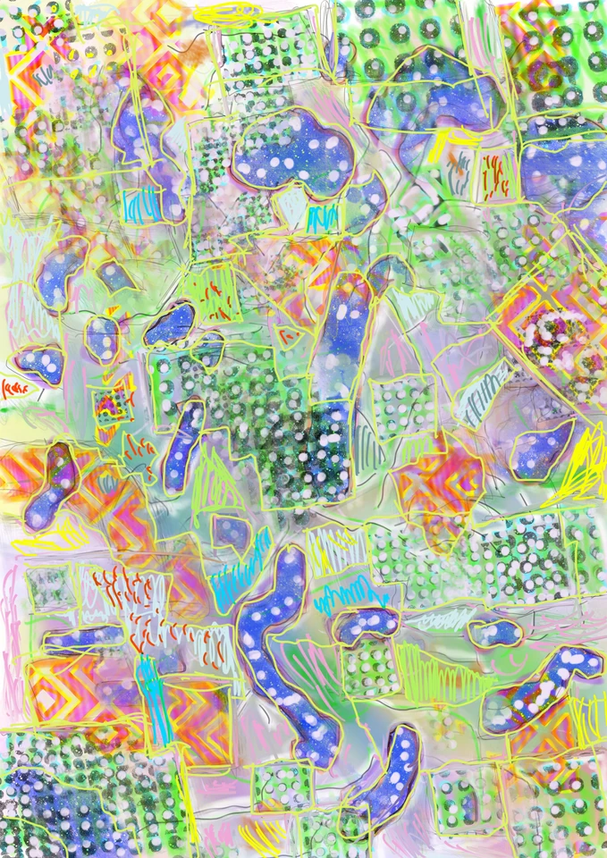


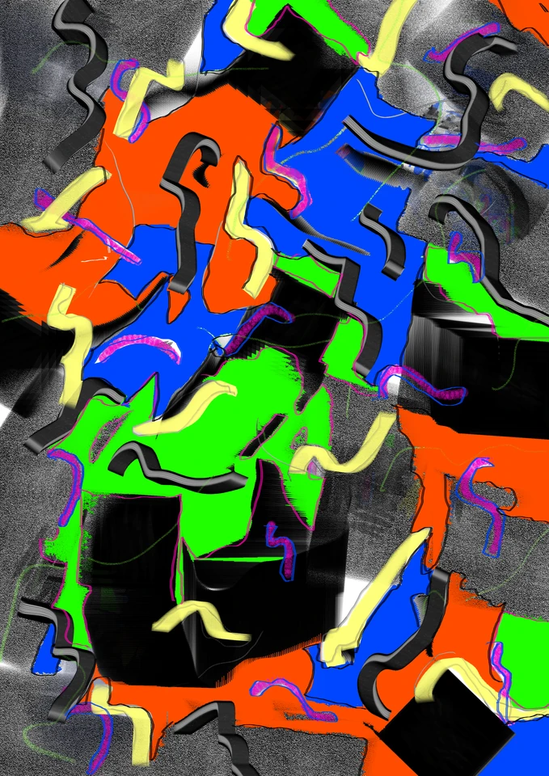

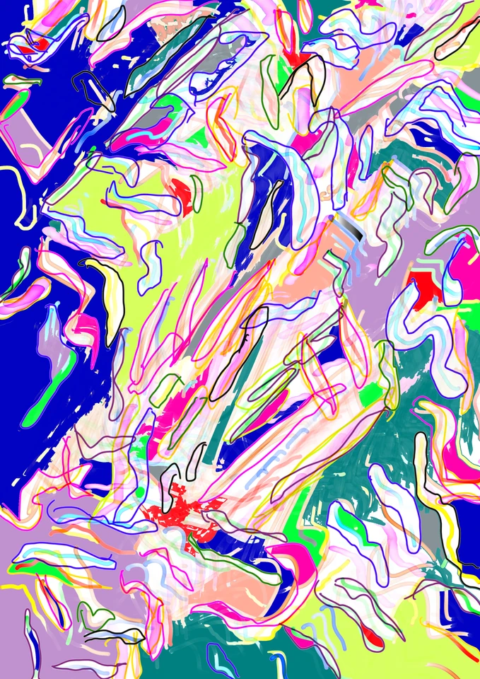

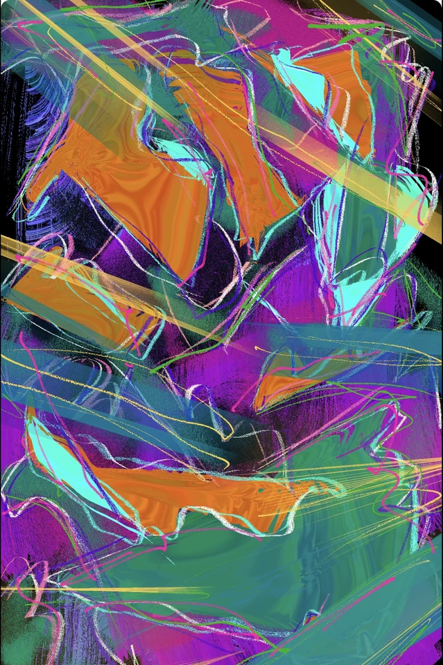

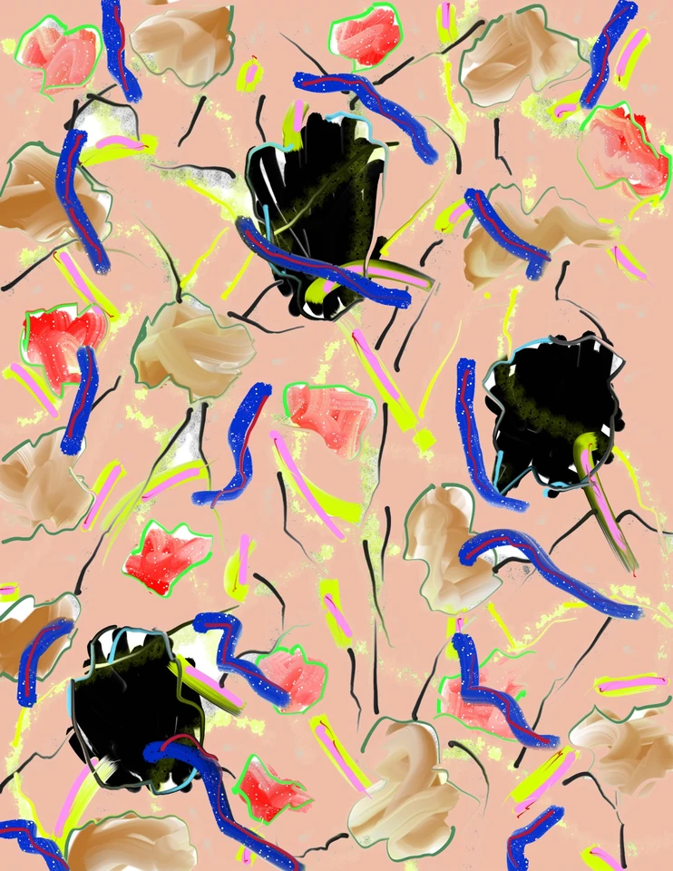

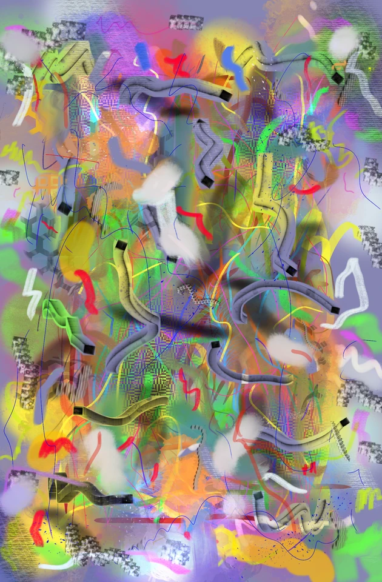

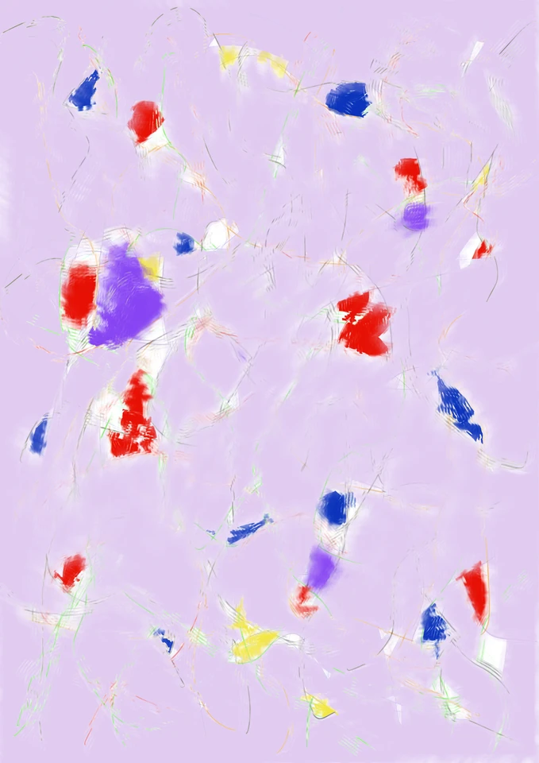